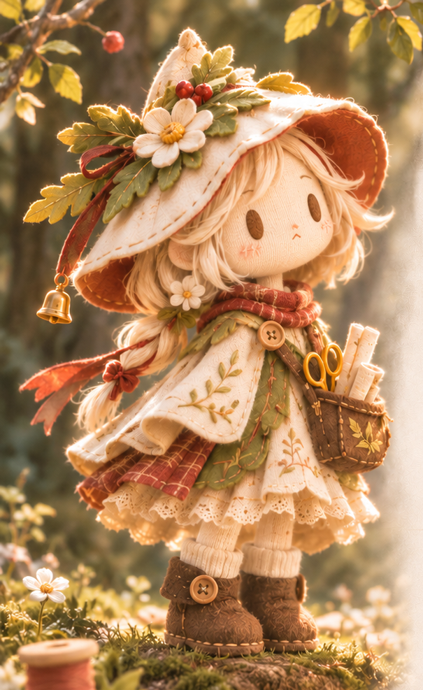
01_primary_character
主角色：材质、配色与造型主基准
605 × 987 px · 参考素材，非已拆层纹理定稿基准 v1 · 2026-11-05
CODEX_START_HERE.md。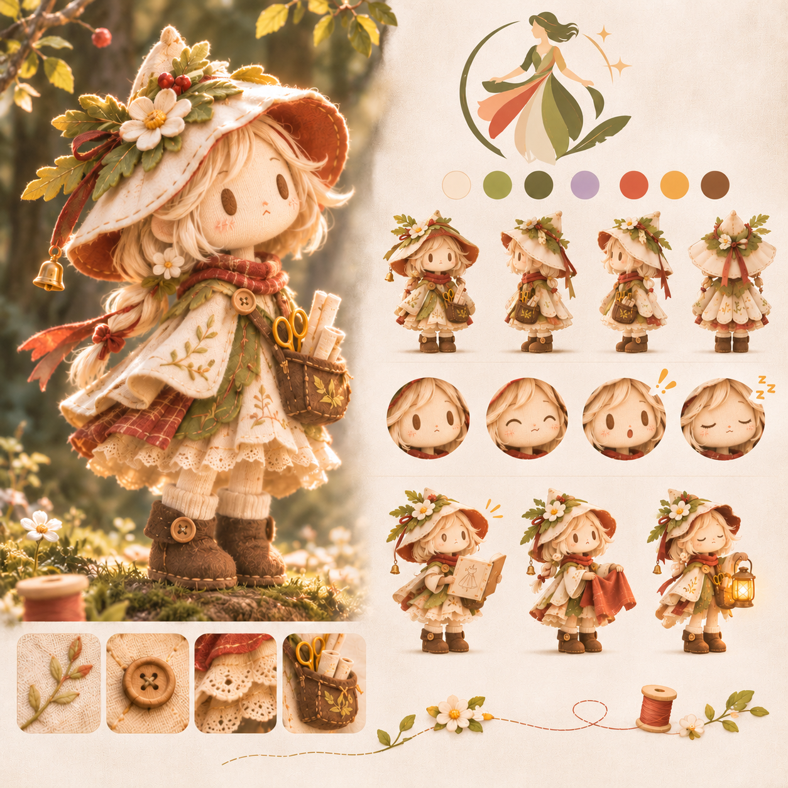

主角色：材质、配色与造型主基准
605 × 987 px · 参考素材，非已拆层纹理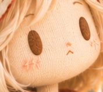
主角色面部：棕色椭圆绣眼、无睫毛
177 × 158 px · 参考素材，非已拆层纹理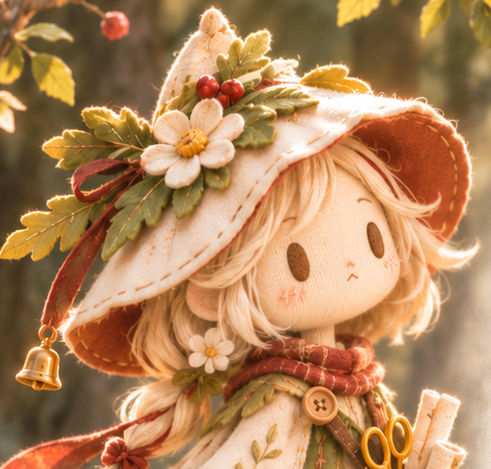
帽子、发色、发型、花叶与铃铛
542 × 518 px · 参考素材，非已拆层纹理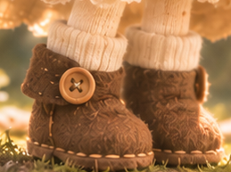
棕色短靴、奶油色袜筒与木扣
259 × 193 px · 参考素材，非已拆层纹理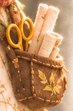
工具袋在主角色上的位置与形状
150 × 227 px · 参考素材，非已拆层纹理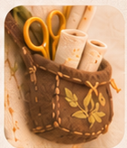
工具袋细节：金色剪刀与纸样卷
140 × 164 px · 参考素材，非已拆层纹理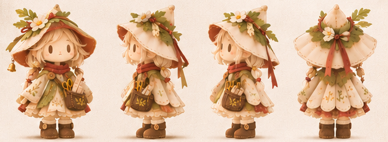
正面、侧向与背面辅助图（非严格正交）
654 × 240 px · 参考素材，非已拆层纹理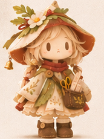
正面辅助图：轮廓与站姿
172 × 230 px · 参考素材，非已拆层纹理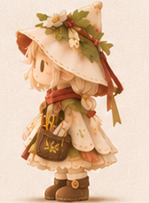
侧向辅助图 A
168 × 229 px · 参考素材，非已拆层纹理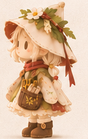
侧向辅助图 B
145 × 230 px · 参考素材，非已拆层纹理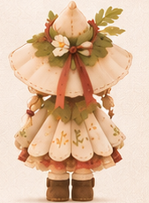
背面辅助图
169 × 230 px · 参考素材，非已拆层纹理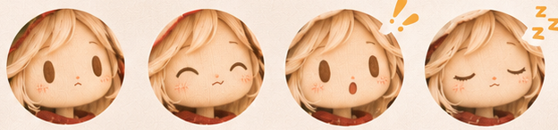
表情辅助图：以无睫毛硬约束覆盖局部残留
624 × 146 px · 参考素材，非已拆层纹理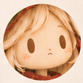
安静表情辅助参考
141 × 141 px · 参考素材，非已拆层纹理闭眼微笑辅助参考
140 × 141 px · 参考素材，非已拆层纹理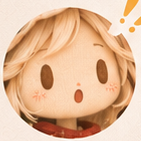
轻微惊讶辅助参考
141 × 141 px · 参考素材，非已拆层纹理闭眼辅助参考：不得保留任何睫毛短线
143 × 141 px · 参考素材，非已拆层纹理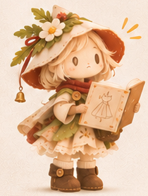
拿设计本动作构想，后续可选
210 × 277 px · 参考素材，非已拆层纹理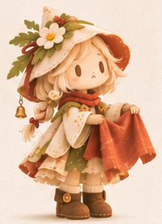
展开布料动作构想，后续可选
201 × 277 px · 参考素材，非已拆层纹理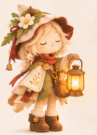
提灯动作构想，后续可选
200 × 277 px · 参考素材，非已拆层纹理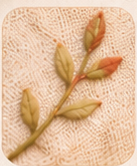
布面、缝线与植物刺绣质感
137 × 166 px · 参考素材，非已拆层纹理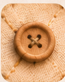
木纽扣与缝线质感
132 × 166 px · 参考素材，非已拆层纹理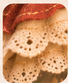
花边与铁锈红格纹布细节
137 × 166 px · 参考素材，非已拆层纹理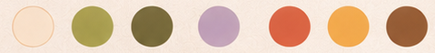
母图色卡：辅助取样，不是精准材质色规范
479 × 59 px · 参考素材，非已拆层纹理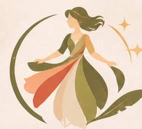
概念板中的装饰性标志，仅作构图参考
284 × 258 px · 参考素材，非已拆层纹理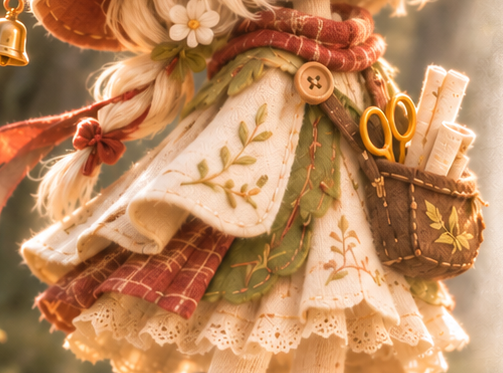
披肩、围巾、裙摆与工具袋的整体关系
503 × 373 px · 参考素材，非已拆层纹理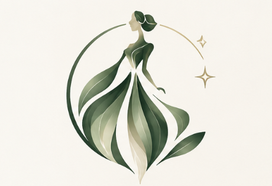
用户之前提供的平台 Logo，只作品牌辅助，不覆盖角色定稿
460 × 315 px · 参考素材，非已拆层纹理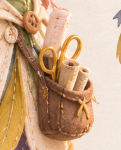
用户指定加入的工具袋截图，只作配件辅助
121 × 150 px · 参考素材，非已拆层纹理